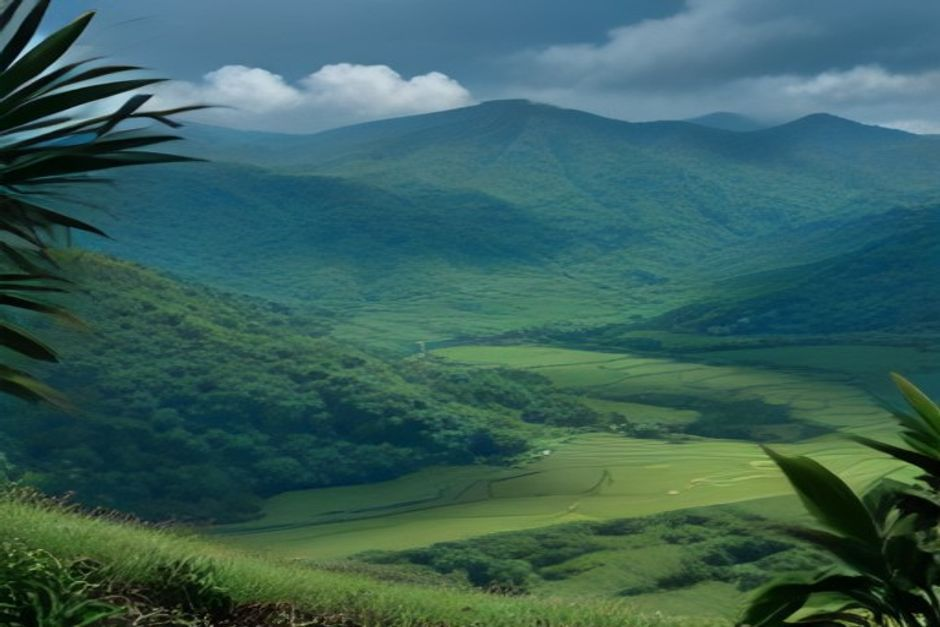
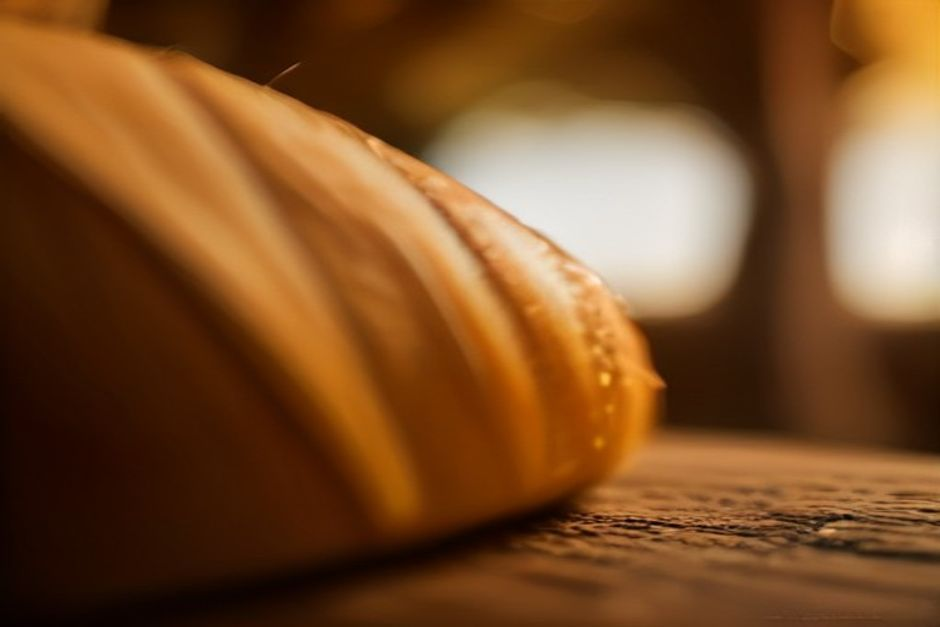

L'aguardente de cana è il distillato più antico di Madeira — un rum di canna da zucchero limpido e infuocato, distillato sull'isola fin dal XV secolo, molto prima che la poncha lo trasformasse in un cocktail. Ecco cos'è davvero, in cosa si differenzia dal rum che la maggior parte delle persone conosce, e dove si può vedere come viene prodotto.
Cos'è l'aguardente de cana?
L'aguardente de cana è un distillato ottenuto dalla fermentazione del succo di canna da zucchero, prodotto a Madeira sin da quando la canna fu piantata per la prima volta sull'isola, nel XV secolo. Con il suo nome ufficiale, «Rum da Madeira — Rum Agrícola», gode dello status di Indicazione Geografica Protetta: può essere prodotto solo nell'arcipelago di Madeira, esclusivamente da canna da zucchero coltivata lì, e unicamente fermentando e distillando il succo di canna grezzo — niente melassa, nessuna scorciatoia. Il risultato è un distillato limpido, ad alta gradazione, dal carattere deciso ed erbaceo, inconfondibilmente diverso dal rum venduto nella maggior parte dei supermercati.

L'aguardente de cana è solo rum con un altro nome?
Non proprio. Quasi tutto il rum venduto su larga scala — caraibico o meno — è prodotto dalla melassa, il sottoprodotto denso e scuro che resta dopo che lo zucchero è già stato estratto e raffinato dalla canna. L'aguardente de cana salta completamente questo passaggio: la canna viene pressata e il suo succo fermentato e distillato lo stesso giorno in cui viene tagliata, prima che gli zuccheri abbiano modo di degradarsi. Questo metodo del "rum agricolo" — la stessa famiglia del rhum agricole francese della Martinica — produce un distillato che ricorda più da vicino la pianta stessa: vegetale, leggermente pepato e meno dolce di un rum di melassa della stessa età.
L'aguardente de cana è la stessa cosa della poncha?
No — la poncha è ciò che si ottiene dopo che l'aguardente de cana è stata mescolata con qualcos'altro. La poncha sbatte il distillato grezzo con miele e agrumi (tradizionalmente limone) fino a farlo schiumare, ammorbidendo l'alcol nella bevanda più conosciuta di Madeira. Bevuta da sola, senza miele né agrumi, l'aguardente de cana è un'esperienza completamente diversa — più vicina a un rum agricolo forte e trasparente, tradizionalmente presa come uno shot breve e corroborante piuttosto che sorseggiata.
Dove viene davvero prodotto il rum di Madeira?
Sull'isola restano solo pochi mulini da zucchero ancora attivi, e il più adatto ai visitatori è Engenhos do Norte, a Porto da Cruz, sulla costa nord. Costruito nel 1927 e ancora funzionante con i suoi macchinari originali del XIX secolo, è uno degli ultimi luoghi in Europa dove la canna da zucchero viene ancora lavorata alla maniera tradizionale, dal carretto all'alambicco. L'ingresso è gratuito, e un percorso a visita libera vi porta davanti ai rulli di macinazione, alle vasche di fermentazione e agli alambicchi di rame, per concludersi alla Casa do Rum accanto, con una degustazione. Il mulino spreme effettivamente la canna solo durante il raccolto, all'incirca da febbraio a maggio — al di fuori di questo periodo troverete i macchinari fermi, ma l'edificio e la sua storia sono visitabili tutto l'anno.
Chi è William Hinton, e perché il suo nome è su così tante bottiglie?
William Hinton era un distillatore anglo-madeirense che fondò la sua casa di rum sull'isola nel 1845 e, entro gli anni '80 dell'Ottocento, aveva costruito una delle più importanti attività di canna da zucchero e rum della regione. Il mulino originale chiuse nel 1986, ma due decenni dopo un discendente, Jimmy Welsh, fece rivivere il know-how di famiglia all'Engenho Novo di Calheta, sulla costa sud, facendo invecchiare il rum in botti di rovere francese anziché venderlo giovane e trasparente. Quella che era iniziata con 90 botti nel 2009 è diventata una cantina di ben oltre un migliaio, e il nome William Hinton — sia il «Rum Agrícola» chiaro e giovane sia le versioni invecchiate più scure — è oggi tra i più facili da trovare nei negozi di Funchal.
Si può visitare un mulino da zucchero attivo a Madeira?
Sì, ed è una delle attività più sottovalutate dell'isola — la maggior parte dei visitatori va dritta ai bar di poncha di Câmara de Lobos senza mai vedere da dove viene realmente il distillato nel bicchiere. Oltre a Engenhos do Norte, l'Engenho Novo di Calheta organizza le proprie visite e degustazioni incentrate sui rum invecchiati, offrendo un quadro molto diverso dello stesso distillato grezzo. Vedere entrambi — il mulino del 1927 ancora attivo sulla costa nord e la cantina di botti sulla costa sud — dà molto più senso a ciò che si beve nel proprio bicchiere di poncha.
Come si dovrebbe bere?
Liscia e fredda è il modo tradizionale in cui i locali bevono la versione chiara e non invecchiata — uno shot breve e deciso piuttosto che qualcosa da sorseggiare con calma. Le versioni invecchiate, dopo qualche anno in rovere, si avvicinano a un buon rum scuro e vengono di solito bevute lentamente, come si berrebbe un whisky. In entrambi i casi, viene raramente bevuta del tutto da sola in compagnia: una bottiglia tende a comparire accanto a poncha, formaggio e conversazione — esattamente come la serviamo a bordo, un goccio di aguardente de cana in una poncha appena preparata, bicchiere in mano, in rotta verso Cabo Girão durante un Day Trip di Chifbay.
La poncha si prende tutta l'attenzione. Il distillato che la compone — e che fu la più antica esportazione di Madeira, ancor prima del vino — merita di essere conosciuto per quello che è.
Che la degustiate in un mulino attivo, in una cantina di rum invecchiato o da una bottiglia fresca a bordo, l'aguardente de cana è una delle poche cose rimaste sull'isola prodotte quasi esattamente come 500 anni fa.
